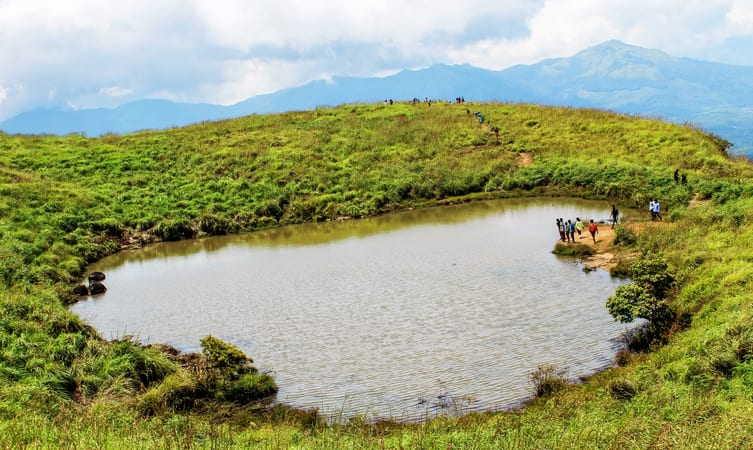

Places to Visit in Wayanad are Banasura Sagar Dam, Chembra Peak, Kuruva Island, Edakkal Caves, Chain Tree, Pookode Lake, Tholpetty Wildlife Sanctuary, The Bamboo Factory, Wayanad Wildlife Sanctuary, Soochipara Falls, Phantom Rock, Neelimala View Point and many more.While a lot of us are searching for places to visit in Wayanad, let’s make this easier for you with our amazing list. Loaded with charming waterfalls, caves, resorts, and homestays, this prominent town is renowned for its zest ranches and natural life.
Among the prettiest territories of Kerala, Wayanad has a large number of alternatives for its guests.Wayanad is situated on the fringe of Tamil Nadu and Kerala. The whole area is totally green with sloping reaches and natural life incorporating Tholpetty in the North, Muthanga in the east circumscribing with Tamil Nadu, Kalpetta in the south, Mananthvadi in the north-west and Sultan Bathery (Sultan Battery) in the east.
In the east one can find the Wayanad Wildlife Sanctuary which is a rich, forested locale with regions of high elevation, home to creatures including Asiatic elephants, tigers, panthers, and egrets. In the Ambukuthi Hills toward the south, one can find beautiful Wayanad attractions like Edakkal Caves which contain antiquated petroglyphs, some going back to the Neolithic age.

Edakkal caves are well known for its pictorial depictions (cave art), which are thought to be of 6000 B C. To achieve the hollows, one needs to trek through the Ambukutty Mala. It will take around 45 minutes to climb the hill and you will never get baffled in your outing to these historical caves & it is one of the famous places to see in Wayanad. Inside the cave, we can see two chambers.
The lower chamber is 18 ft long, 12 ft wide and 10 ft high and the upper chamber is 96 ft long, 22 ft wide and 18 ft high. We can see animal figures and objects used by humans, on the walls of the caves.These carvings give incredible confirmation for a very enlightened society who lived in the pre-noteworthy age. Edakkal caves have drawn awesome consideration of archaeologists and students of history around the world.
Looking for a weekend getaway this weekend, then head out to Wayanad and visit the famous Chembra Peak. Eight kilometres south of Kalpetta, close to the town of Meppady, lays the most elevated top in Wayanad. Chembra crest borders Nilgiri slopes in Tamil Nadu and Vallarimala in Kozhikode and it is one of the beautiful places to see in Wayanad. This place is a perfect goal for trekking exercises.
Climb up the rough landscapes of the Chembra Peak found 2,100 meters above ocean level on the southern piece of Wayanad. Chembra is the tallest peak in Wayanad and is a perfect zone for trekking.There is a heart moulded lake while in transit to the highest point of the pinnacle, which is accepted to have never become scarce, is a noteworthy vacation spot here. With authorization from the Forest Department, one-day treks and two-day natural life treks are conceivable.
One of the major tourist places to visit in Wayanad is Banasura Sagar Dam that impounds the famous Karamanathodu tributary of the east flowing river in Kerala that is Kabini River. The dam is encircled amidst a beautiful nature with a lot of options to do trekking and similar adventure activities.
Hundreds of tourists arrive at the dam to enjoy its beauty and take photographs. It is a part of the Indian Banasura Sagar Project consisting of a dam and a canal project.

Major attraction and one of the scenic Wayanad tourist places is Meenmutty Waterfalls located at a distance of around 29 kilometers from Kalpetta. It is a famous waterfall in the state of Kerala. A three tiered waterfall is a surprising sight to be visited.The waterfalls fall down from a height of 300 meters. To reach the waterfalls, you can do a trekking for about 2 kilometers through the thick jungles from the Wayanad-Ooty Road.
It becomes very dangerous during monsoon and rainy seasons. The gushing waterfalls are located near the Neyyar Reservoir area.People with an adrenaline rush come here in plenty to experience the different levels of rock climbing and trekking. The location exhibits an ideal blend of stunning natural sights with amazing trekking trails in Wayanad. Banasurasagar Dam is the closest attraction which gives the waterfalls fame among the adventure lovers.
If someone makes a list of all the places to visit in Wayanad, Tholpetty Wildlife Sanctuary would always be a sure thing on that list. Located in the lap of Wayanad and the Western Ghats, this region is famed for the variety of wildlife that one can experience here.
We can take in the views of several animals living in their natural habitats, like Elephants, Tigers, Leopards, Bears, deer, monkeys, and reptiles, fishes and bird species.